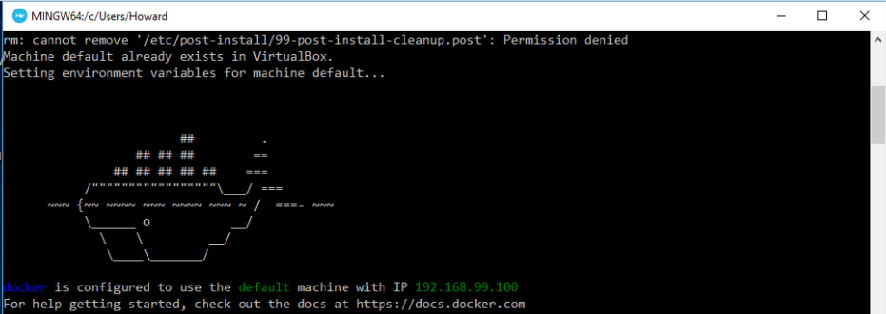

Docker¶
| Author: | Howard Butler |
|---|---|
| Contact: | howard@hobu.co |
| Date: | 01/07/2015 |
Introduction¶
It’s a giant pain to build everything yourself. To make it simpler to use PDAL, a build based on Docker is also available. This document describes how to use it to operate on your own data.
See also
The What is Docker document describes in more detail what exactly Docker is. Think of it as a virtualization platform that doesn’t have to be “built” every time from scratch like Vagrant.
Getting Started¶
Install Docker Toolbox.¶
Docker starting documentation can be found at the following links. Read through them a bit for your platform so you have an idea what to expect.
Note
This tutorial will assume you are running on Windows, but the same commands should work in OSX or Linux too – though definition of file paths might provide a significant difference.
Run Docker Quickstart Terminal¶
Docker is most easily accessed using a terminal window that it configures with environment variables and such. Double-click on the “Docker Quickstart Terminal” link on your desktop (Windows) or run the “Docker Quickstart Terminal” application (Mac).
After some text scrolls by, you should see something like the following image :
To be sure Docker is working correctly and everything is happy, issue the following command and confirm that it reports similar information:
docker-machine env default

Fetch PDAL Image¶
The PDAL image provides a recent master branch build of PDAL. It is pushed
to Docker Hub periodically by the PDAL developers. We need to pull it
locally so we can use it to run PDAL commands. Once it is pulled, we
don’t have to pull it again unless we want to refresh it for
whatever reason.
docker pull pdal/master
Note
Other PDAL versions are provided at the same Docker Hub location,
with an expected tag name (ie pdal/1.1, or pdal/1.x) for
major PDAL versions. The PDAL Docker hub location at
https://hub.docker.com/u/pdal/ has images and more information
on this topic.
Fetch Sample Data¶
We need some sample data to play with, so we’re going to download
the autzen.laz file to your C:/Users/Howard drive. Inside the
Quickstart Terminal, issue the following curl command:
curl -O http://www.liblas.org/samples/autzen/autzen.laz
Note
That’s a capital Oh, not a zero.
List the directory to be sure that it was downloaded
ls *.laz
Print the first point¶
To test that we have a working system, we will print out the values of the
very first point of autzen.laz.
docker run -v //c/Users/Howard:/data pdal/master pdal info //data/autzen.laz -p 0
Here’s a summary of what’s going on with that command invocation
docker: We are running PDAL within the context of docker, so all of our commands will start with thedockercommand.run: Tells docker we’re going to run an image-v //c/Users/Howard:/data: Maps our home directory to a directory called/datainside the container.Note
The double slash,
//c/Users/Howardinstead of just/c/Users/Howardis because MSYS on Windows eats the first slash. See https://github.com/docker/docker/issues/12751 for a ticket describing this pain point in more detail. You do not need double slashes if you are using OSX or Linux as your Docker container host.See also
The Docker Volume document describes mounting volumes in more detail.
pdal/master: This is the Docker image we are going to run. We fetched it with the command above. If it were not already fetched, Docker would attempt to fetch it when we run this command.pdal: We’re finally going to run thepdalcommand :)info: We want to run info command on the data//data/autzen.laz: Thepdalcommand is now running in the context of our container, which we mounted a/datadirectory in with the volume mount operation in Step #3. Ourautzen.lazfile resides there.Note
The same note about the double slash described in Step #3 applies here as well.
What you get¶
The configuration that PDAL provides contains nearly every possible feature except for Oracle Point Cloud support. Things it includes are:
- filters.hexbin
- filters.reprojection
- readers.nitf and writers.nitf
- LASzip support in readers.las and writers.las
- Interpolation with Points2Grid using writers.p2g
- Python manipulation using filters.predicate and filters.programmable
- PCL support via filters.pclblock, readers.pcd, writers.pcd, ground command, and pcl command
- writers.geowave
Head to Pipeline for more information on using PDAL pipelines. Two pipelines
are provided in /home/vagrant that are used to load the st-helens-small.las
file into pgpointcloud.